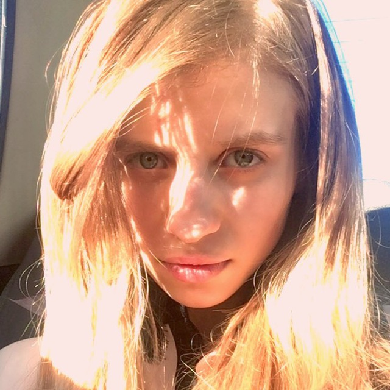

VY

Viktoriia Yaremenko
Painter · Visual Artist · Creator of Emotions
Artistic Vision
Viktoriia creates paintings that speak to the soul, blending classical techniques with contemporary sensitivity. Her work explores light, memory, and the subtle spaces between dream and reality. Based in Switzerland, exhibited across Europe.
— art as a silent poem —
Portfolio
✧ нажмите на любую работу для увеличения ✧